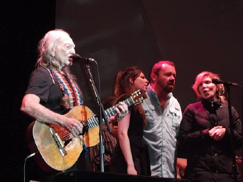
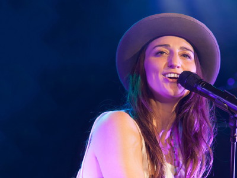
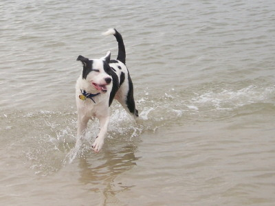

2014 Holiday Web Page

| Erich and Margie's 2014 Holiday Web Page | |
December On Christmas Eve, we dined with friends and a coworker from 15 years ago. On Christmas day, we took Gamble back to the dog beach, which we finally figured out how to do well, then dined with other friends. Margie went an entire year without any frustration dreams. For the first time in many years, we spent New Year's Eve alone, but still got intoxicated.
January Margie, not trusting shredders, burned some of her sensitive documents. One of Margie's Facebook comments was read on NPR. We enjoyed Barb's new year brunch. And later that evening we got together with Michele and Guen for drinks and dessert. We bought the last two tickets for a movie (and had horrible seats). Margie got hit on at a bar. Erich won his Super Bowl pool, 2 weeks before the Super Bowl. We cleaned our oven, for the first time in 10 years.
February We celebrated Groundhog Day, Lynn's birthday, Gamble's birthday, Chinese New Year, and the Super Bowl all on the same day. On our way to see Jeanne Robertson perform, we ran into our landlord of 11 years at a restaurant in Orlando. The next day we saw Naming The Twins in a living room concert at the Branton's. One of Erich's students received an a cappella serenade in class for Valentine's Day. We attended Harold's wake. Erin and Tom visited, and Margie drugged Gamble to be more sedate, but he could hardly stand. Gamble learned how to howl (at sirens) from his pals at doggie day care.
March We went with Lynn to the Deland Dog Parade. We went canoeing, taking more nature pics. The police thought our house looked abandoned. Margie found one of Santa's gifts she had hoped to give Erich for Christmas hidden in a closet. One of Erich's classes was interrupted by a fire drill, so he taught outside. We were visited by Margie's high school friend Patty for 2 nights, and Erich's college buddy Rich and his son Ross for 4 nights. We're happy to report Gamble caused no casualties. Some of Erich's puzzles were used for a Slovenian puzzle competition. Margie got REALLY sick for a week. Margie bought her first mac, but she still misses her PC.
April Without planning it, Erich had chocolate chips at all 3 meals one day. A police officer taught Gamble how to heel. We enjoyed two movies at the Florida Film Festival. Margie got up early to see the blood moon. Erich gave his students plastic eggs filled with candy for Easter. Erich won the 5th annual mini-golf tournament amongst friends. We celebrated our birthdays at game parties. One of Erich's presents for his birthday was discovering 2 of his students had cheated, preventing one of them from graduating.
May We attended the Gamble Rogers Folk Festival, hearing lots of good music despite the rain and cold. We watched all 3 seasons of Veronica Mars. We saw Alison Krauss and Willie Nelson in concert. Erich's friend Barbara came to visit from Arkansas. We sunned ourselves on the beach, walked the dog repeatedly, and hiked part of the Florida trail, resulting in some nasty chigger bites.
June We saw a southern two-striped walking stick in our garage. Erich had some wisdom (teeth) removed. We watched the first season of Masters of Sex. We attended two games parties. Erich made a lot of puzzles. We had our doggie shower in our garage redone. Gamble discovered a family of armadillos.
July We cleaned the eaves of our house, and saw some more two-striped walking sticks mating. One day Erich tried new restaurants for breakfast, lunch, and dinner. At least dinner was good. We saw Sara Bareilles in concert, but she was way too loud.
August We bought a new TV and TV stand. Our satellite technician wasn't sure who Paul McCartney was. We had Barb over to beat us at Koi Koi. Erich gave away a third of his CD collection. We went with the Dunns on SunRail to Winter Park for the day. Erich learned to how to serve in tennis using only one hand. We went to a free concert by Hodgson, Welch, and Walters, our first time at the DeBary amphitheater. Erich had some puzzles used for the World Puzzle Championship. We had lunch with Baldur, a star graduate of our program. We had dinner over in New Smyrna to hear Brian Smalley, whom we have been following since seeing him at the folk festival. We spent Labor Day weekend on St. Pete Beach with Scott and Nita, some friends of Margie from her first teaching job in Alabama.
September We attended and hosted a games party. Erich binged "My So-Called Life". John, one of Erich's college buddies, visited with his three kids. We took the boat ride at Blue Spring and the kids enjoyed Erich's puzzle collection. One of Erich's students asked if she could complete the course, from India. A raccoon climbed a palm tree in our back yard, jumped up and down on one of the fronds, and fell to the ground when it broke. Margie saw some cool road signs.
October We visited Erin and Tom in Indialantic. After celebrating the annual departmental Je Ne Sais Quoi, we spent a few hours at Deland's Jazz Festival. Erich got his first letter from AARP, giving Margie great joy. Erich put some of his father's art on-line. We had lunch with Susan, whom we hadn't seen since Cornell.
November For all of one day, all of Erich's students had A, B, or C averages. We celebrated World Vasectomy Day. On Veteran's Day we went to the beach and saw an armadillo and a coconut. We enjoyed the Deland Art Festival, but didn't buy anything. We celebrated Thanksgiving with the usual games party feast. Erich listened to every song in his music collection that he hadn't heard for the last year.
December While getting some dessert at Perkins, an entire family of elves was seated at the next table. Gamble wanted to help us wrap presents. We had 14 guests attend our annual Solstice pot luck celebration. We had the house power washed. We visited the beach with Gamble on Christmas. We spent a delightful Christmas dinner with the Dunns. We were awakened by the sound of a giant roach swimming in Margie's change dish.
This year's total of number of cars turning left with their right turn signal on: 8. Erich's holiday puzzles can be found here. Erich's list of humorous things he heard football announcers say this year is here. And you can see our archive of previous holiday web pages here.
  
 |